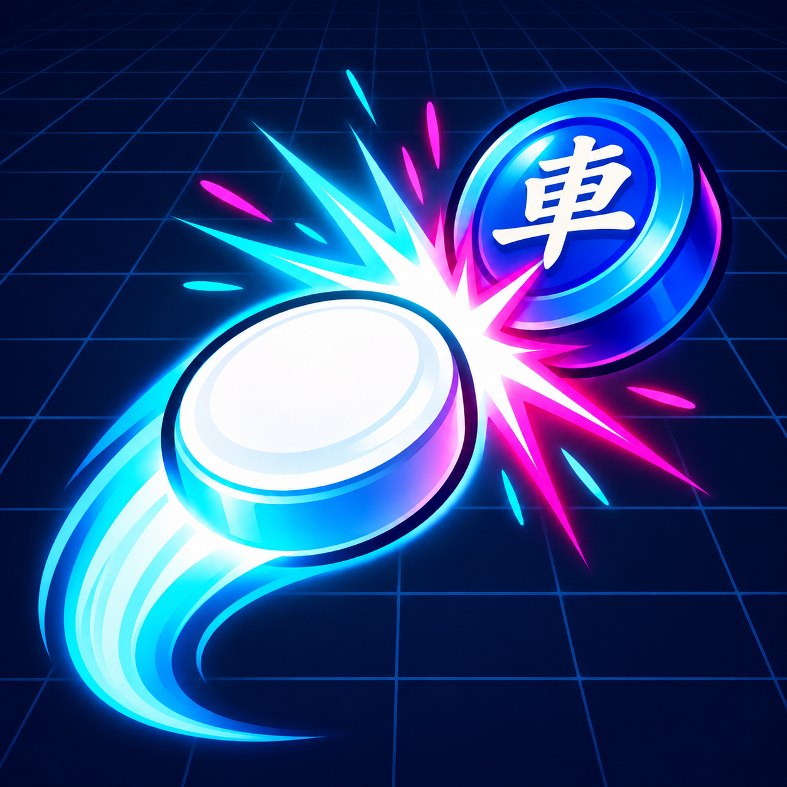

독립 앱 스튜디오
KooAsak!
게임부터 패션·생활 앱까지.
게임도 만들고, 일상에서 자주 쓰는 앱도 만듭니다. 첫 게임은 장기에서 영감을 얻은 장기 러쉬입니다.

첫 번째 게임
장기 러쉬
장기 기물의 행마법을 바탕으로 다음 수를 읽고, 연속으로 적 기물을 잡아 점수를 쌓는 1인용 보드 게임입니다.
Android 출시 준비 중독립 앱 스튜디오
게임부터 패션·생활 앱까지.
게임도 만들고, 일상에서 자주 쓰는 앱도 만듭니다. 첫 게임은 장기에서 영감을 얻은 장기 러쉬입니다.

첫 번째 게임
장기 기물의 행마법을 바탕으로 다음 수를 읽고, 연속으로 적 기물을 잡아 점수를 쌓는 1인용 보드 게임입니다.
Android 출시 준비 중